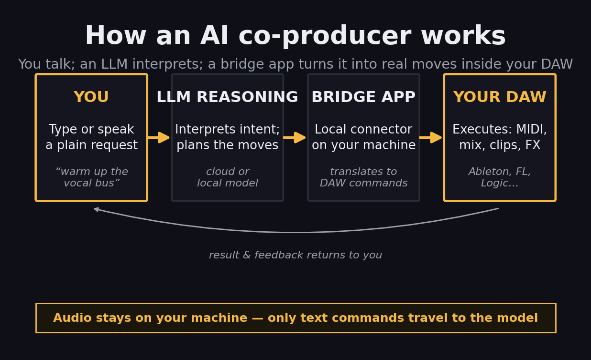
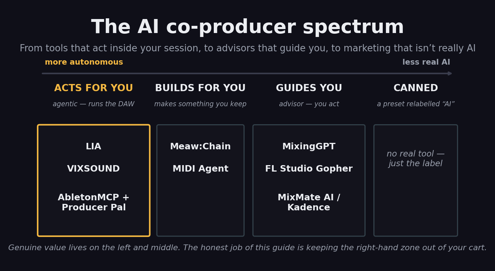

Type “lower the reverb on the pad three dB” and watch your DAW actually do it. That is the promise of 2026’s newest category of music tool — the AI co-producer, an assistant you talk to that reads and operates your session instead of just processing audio. The pitch is seductive and the marketing is loud, which means the real question is not “does this exist” (it does) but the harder one: which of these tools genuinely runs your DAW, which is a polite advisor, which is a rebranded macro wearing an AI badge — and is any of it worth your time today? This guide answers that, with every price and feature checked against the vendor in June 2026. It is a sourced field analysis, not a claim that we bench-tested all six in a studio; where something is the vendor’s claim rather than a measured fact, we say so.
The closest thing to genuinely running your DAW by talking to it — Ableton on macOS, today.
Open-source bridges that let Claude drive Ableton Live — if you’ll do the setup.
Screenshot your plugin and get tailored mix advice across seven DAWs.
Describe a sound; it assembles a processing chain from the plugins you already own.
A chat panel beside Live that generates MIDI, separates stems and automates moves locally.
Free, native, manual-grounded — the fastest answer to “how do I do this in FL?”
The honest caveat: hands-off control is mostly Ableton-and-macOS in mid-2026. Everything else either advises you or is on a roadmap. Pick for what ships today, not what is promised.
What an “AI Co-Producer” Actually Is
Strip away the branding and an AI co-producer is one idea: a conversational layer that sits between you and your DAW. You make a request in plain language — typed or spoken — and the tool does one of two things. It either acts, sending real commands into your session to load an instrument, write MIDI, change a level or build a chain; or it advises, reading what you are doing and telling you what to change while you make the move yourself. That single split — acts versus advises — is the most useful lens in the whole category, and we will come back to it constantly.
The acting kind almost always works through a small bridge app. The language model lives in the cloud (or, increasingly, partly on your machine); a lightweight local program translates its decisions into the specific API calls your DAW understands. You type “build me a lo-fi drum chain at 86 BPM,” the model plans the steps, and the bridge executes them inside Ableton or FL Studio. Crucially, in the better implementations your audio never leaves your computer — only the text of your request and the resulting commands travel. That privacy model is a selling point worth confirming per tool, not assuming.

The agentic loop: your words become a plan, the plan becomes DAW commands, and the result comes back to you — with audio staying local. Illustrative concept diagram.
This is a different animal from the AI you may already use. A processor like iZotope Ozone or a smart EQ analyses audio and changes it — that is the territory of our best AI mixing plugins guide and of AI mastering. A co-producer does not touch the audio math directly; it operates the controls or coaches your hands. The two stack neatly: you can let a co-producer advise the mix and an Ozone-style plugin print the master. Keep that boundary clear and the category stops being confusing — this page is strictly about the conversational, session-operating layer, the one part the broad AI tools guide only mentions in passing.
The Honest Test: Real AI vs Rebranded Macro
The fastest way to waste money in this category is to buy a fixed routine dressed up as intelligence. So before any tool earns a score, it has to pass a simple test: does it respond to the specific thing you asked, in the context of your specific session? Genuine tools reason. Ask LIA for a darker pad and it plans a different set of moves than if you ask for a brighter one; show MixingGPT a screenshot of your EQ curve and the advice is shaped by what is on screen. A rebranded macro gives you the same canned result no matter what you say — useful, sometimes, but not what “AI” should mean on the box. A quick way to probe it yourself: ask the tool the same request two different ways, or feed it two different problems, and see whether the output actually diverges. If it does not, you are paying for a preset with a chat window bolted on.
It helps to see the field as a spectrum rather than a list. At one end are the genuinely agentic tools that act inside your DAW. In the middle sit the advisors that read your session and guide you, and the “builds-for-you” tools that hand you an editable artifact — a chain, a MIDI clip — you then own. At the far end is the marketing zone: a preset relabelled as artificial intelligence. No tool we recommend lives there; the honest job of a guide like this is to keep that end out of your cart.

The category as a spectrum. The six tools profiled below are placed by how much they actually do; MixMate AI, Kadence and MIDI Agent sit alongside the advisors. Categorisation is editorial, based on each vendor’s current docs.
One honest aside on testing: this is a sourced analysis, not a studio shoot-out. Several of the most quotable “best AI assistant” pages online are written by the vendors ranking their own product first, so we have leaned on first-party documentation for what each tool does and kept our scores independent of anyone’s marketing. Where a capability is a vendor claim we could not verify, the prose says so. With the lens set, here is the field.
LIA — The Closest Thing to Running Your DAW by Voice
LIA (it stands for Live Intelligent Assistant) is the most genuinely agentic tool here. It connects to Ableton Live on macOS through a lightweight local bridge and turns plain language — in any of a dozen-plus languages — into real session actions: it creates tracks, loads instruments, writes editable MIDI, adds effects, mixes and arranges, all inside Live. You can drive it from a browser, a phone or even Telegram, which makes “add reverb to the vocals” from across the room a real workflow rather than a demo trick. Its own materials stress the privacy posture: it is an assistant, not a generator, so the work stays editable in your session and the audio stays local.
Two honest corrections to the hype. First, despite a roadmap that lists FL Studio, Logic Pro, Cubase and more, the vendor’s current position is that Ableton on macOS is the only live integration today — the rest are waitlist targets, not shipping features. Second, it is cloud-dependent for the reasoning, so it needs a connection and a subscription beyond the free daily tier (paid plans start around €24.99 per month). If you live in Ableton on a Mac and the idea of conducting a session by talking to it excites you, nothing else here gets as close. If you are on Windows or in Logic, LIA is a promise, not yet a purchase.
VIXSOUND — A Native Assistant That Does More Locally
VIXSOUND takes a different route to the same goal: instead of a browser app plus a bridge, it is a native macOS application with a chat panel that sits beside Ableton Live. The pitch is that it does more of its work on your machine — it generates editable MIDI, separates stems locally, analyses audio and automates mixing and arrangement, without needing you to wire up a separate desktop AI app or Max for Live patch. Pricing starts low, around $9 per month with a free entry tier, which undercuts LIA and makes it an easy thing to try if you are already an Ableton-on-Mac producer.
The caveat is the same one that shadows much of this category: the strongest claims for VIXSOUND come from VIXSOUND, including head-to-head pages that place it first. Local stem separation and on-device analysis are genuinely differentiating if they hold up in daily use, and the native-app approach sidesteps a lot of setup friction. We score it just below LIA not because it does less — on paper it does more locally — but because LIA’s agentic control is the more proven, more talked-about capability in mid-2026, and because VIXSOUND, like LIA, is effectively Ableton-and-macOS for now. Try the free tier and judge the analysis quality against your own mixes before you commit.
MixingGPT — The Best In-DAW Advisor
MixingGPT is the standout on the advisor side, and it earns the place with one feature: it reads screenshots. Load it as a VST3, AU or AAX plugin — it runs in Logic Pro, Ableton, Pro Tools, Cubase, Studio One, REAPER and Reason — drop in a picture of a problematic EQ curve or a confusing plugin GUI, and it explains what you are looking at and what to change, in context. It is trained on real mixing sessions and vocal-chain breakdowns rather than generic theory, which shows in how specific its guidance gets — ask it why a vocal sits behind the beat and it will talk about the actual order of de-esser, compressor and EQ rather than reciting textbook ranges. Critically, it advises; it does not process. Ask it to print a finished mix and it will tell you to reach for a different kind of tool.
That advise-don’t-act boundary is a feature, not a flaw: it makes MixingGPT the best tutor in the category, the thing to keep open when you want to learn why a move works rather than have it done for you. The honest flags are availability and price clarity — it advertises a free tier but is, as of mid-2026, rolling out via a waitlist for early access, so “free today” may mean “free once you are in.” If you mix in any major DAW and want a screenshot-literate second opinion on the channel strip, this is the one to put on the shortlist.
Meaw:Chain — Describe a Sound, Get a Chain
The freshest entry here — Safari Audio shipped it on 11 June 2026 — Meaw:Chain does one job and does it cleverly. It is a plugin (VST3, AU, AAX, Mac and Windows) that scans the plugins you already own, then builds a complete processing chain from a text prompt or from audio you record into it. Ask for “a warmer vocal” or “a tighter drum bus” and it assembles a signal chain from your installed tools, can edit an existing chain by natural language, and even explains why it chose each plugin. The recurring delight in early write-ups is producers rediscovering plugins they bought and forgot they owned.
It launched at an intro price of $59.99 (regularly $89.99) and is also bundled in Safari’s wider Everything Bundle. Two honest notes. It is brand new, so its real-world judgement is unproven beyond launch demos — treat it as promising rather than battle-tested. And it is narrow by design: it builds and edits chains, full stop. That focus is exactly why it works, and why it sits in the “builds for you” middle of the spectrum — it hands you an editable result you keep, rather than running your whole session. If your friction is staring at a folder of plugins not knowing where to start, this removes it.
FL Studio Gopher — The Free One Already in Your DAW
If you use FL Studio, you may already own an AI co-producer and not realise it. Gopher is Image-Line’s native assistant, built into FL Studio 2025 and later and free under the lifetime-free-updates policy. It lives in the Communications Panel and is trained specifically on the official FL Studio manual and knowledge base, so it answers questions about routing, sidechaining, sound design and troubleshooting with answers grounded in real documentation rather than guesses. Forget how to route a kick’s sidechain to an 808 and Gopher pulls up the exact steps instantly.
Set expectations correctly and it is genuinely useful: Gopher is an interactive manual, not a mix engineer or a controller. It will not analyse your audio or perform moves for you; it explains how to do them yourself, brilliantly, for the one DAW it knows inside out. (FL 2025 also added Loop Starter, a separate genre-based loop generator, if idea-sparking is what you are after.) For a producer who keeps hitting “how do I do this in FL?”, a free, native, manual-literate assistant is an easy win — just do not expect it to reach into your session and turn the knobs.
AbletonMCP + Producer Pal — The Free, DIY Agentic Route
For the technically adventurous, the most powerful free option is to roll your own. Open-source bridges — AbletonMCP and the friendlier Producer Pal among them — connect Ableton Live to a general AI assistant such as Claude through the Model Context Protocol. Once wired up, you can create and manipulate tracks, load instruments, control playback and adjust device parameters conversationally, using a frontier model rather than a purpose-built one. Because the intelligence is whatever model you point it at, the ceiling here can be remarkably high.
The trade is setup friction. You are installing a bridge, running a desktop AI app, and accepting that an open-source project moves at its own pace with no support desk. It is Ableton-focused and rewards comfort with a little configuration. But the price is zero and the capability is real — this is genuine agentic control, not advice — which makes it our pick for anyone who would rather spend an evening wiring up something powerful than pay a subscription. If LIA is the polished commercial version of “talk to Ableton,” this is the hacker’s version of the same dream.
The Scorecard
Scored on what actually matters for talking to your DAW in 2026 — how much each tool genuinely does, how wide its DAW reach is, whether it is real AI or a canned routine, how available and mature it is, and value — drawing on each vendor’s current documentation and the consensus of recent coverage, not a first-party bench test. Scores are deliberately spread; in a young category, honest gaps matter more than tidy round numbers.
| Tool | Score | Why |
|---|---|---|
| LIA | 8.4 | The most genuinely agentic — real Ableton control by voice or text. Held back only by Ableton-and-macOS-only and cloud dependence. |
| VIXSOUND | 8.1 | Native, does more locally (stems, analysis), cheap. Strong on paper; vendor-sourced claims and the same Ableton/macOS ceiling. |
| MixingGPT | 7.9 | The best advisor: screenshot-literate, seven DAWs, trained on real sessions. Advice only, and availability is waitlist-gated. |
| Meaw:Chain | 7.6 | Clever, fresh, uses the plugins you own. Narrow by design and brand-new, so its judgement is still unproven. |
| AbletonMCP + Producer Pal | 7.2 | Genuinely agentic and completely free. Costs you setup friction and an Ableton-only, support-free, DIY path. |
| FL Studio Gopher | 6.8 | Free, native, manual-literate — a real win for FL users. Bounded by design: an interactive manual, not a controller. |
What They Can — and Can’t — Actually Control
Scores compress a tool to one number; the more useful question when you are choosing is “will it do the specific thing I need?” The four jobs that matter are mixing moves, clip and arrangement control, sound and chain design, and whether it works across more than one DAW. Mapping the field against those reveals the real shape of the category: the agentic tools (LIA, VIXSOUND) act across mixing, clips and sound but are tied to one DAW, while the plugin-format tools (MixingGPT, Meaw:Chain) travel across many DAWs but either advise or build rather than fully run a session.

What each tool can act on, advise on, or leave alone. Sourced from each vendor’s current docs in June 2026 — capability, not a measured benchmark.
The pattern is worth internalising before you buy: in 2026 you generally trade depth of control against breadth of DAW support. A tool that truly runs your session is, today, almost always locked to one DAW (usually Ableton); a tool that works everywhere is, today, almost always an advisor or a builder rather than a driver. Knowing which side of that trade you need — hands-off control in one DAW, or portable advice across several — decides your shortlist faster than any score.
Don’t Be Fooled by the Name
Three honourable mentions exist mainly to sharpen the category’s edges. The clearest trap is Output Co-Producer: it carries the exact name of this category, but it is not a conversational assistant at all. It is a plugin that listens to your session and finds or generates royalty-free samples that fit your track — a smart sample-finder, around $10 a month or bundled in Output One. Genuinely good at its job; simply not a tool you talk to in order to run your DAW. If you went shopping for an AI co-producer on the name alone, this is the mismatch you would buy by accident.
MIDI Agent is the useful skeptic’s anchor. It is an AI MIDI generator — a VST that turns text prompts into editable melodies, chords and drums using ChatGPT, Claude or Gemini, for a one-time $49. Its own marketing draws exactly the line we have been drawing all guide: genuine neural generation versus algorithmic music theory rebranded as AI, and editable MIDI you keep versus web-only audio you cannot. It is a generator, not a session operator, but it models the honesty the whole category needs.
And a cautionary tale: WavTool, a 2023 pioneer that put a GPT-4 chat assistant inside a browser DAW, appears to have spun down in late 2024 and been quietly acquired, with no confirmed relaunch in 2026. Several “best AI tools” lists still describe it in the present tense; treat those as a warning about how fast this space churns — and about why verifying that a tool still ships, before you build a workflow on it, is not optional.
The Limits, and Where This Goes Next
It is worth being clear-eyed about what this category cannot do yet, because the marketing rarely is. Reliable, hands-off control is still narrow. The genuinely agentic tools cluster around Ableton Live on macOS; deep control of Logic, Cubase, Pro Tools or Studio One is mostly roadmap language in mid-2026, not a feature you can lean on today. The advisors are more portable but, by definition, leave the doing to you. And the whole field is moving fast enough that a tool’s status — price, availability, even existence — can change between a blog post and your checkout, as WavTool shows.
There is also a quieter limit worth naming: an AI co-producer is only as good as your ability to say what you want. The tools translate intent into action, but they do not supply the intent. A producer who knows the move they are reaching for gets enormous leverage; a producer who does not can be led confidently in a mediocre direction. These are accelerators for taste, not substitutes for it — which is, frankly, the healthiest possible relationship to have with them. The producers getting the most out of these tools in 2026 tend to be the ones who already know roughly what they want and use the assistant to get there faster, skipping the menu-diving and the manual lookups. Used that way, a co-producer compounds an experienced ear; used as a crutch, it mostly speeds up arriving somewhere generic.
The trajectory, though, is unmistakable. DAW makers are building assistants in natively (FL’s Gopher is the first of many), the open-source MCP bridges are pushing genuine agentic control to anyone willing to wire it up, and tools like MixingGPT and Meaw:Chain are proving that “talk to it” is a real interface, not a gimmick. The category that barely existed two years ago is now a spectrum with real winners on it. The honest read for 2026: adopt one where it removes a specific friction, keep the agentic controllers on a quarterly watch, and do not pay for a promise.
Which One Should You Use?
Try It Yourself: 3 Exercises
You do not need to buy anything to learn whether this category fits you. These work with free tiers and a DAW you already own.
- Open a mix that has one thing bugging you — a harsh vocal, a muddy low end.
- Load a free in-DAW advisor (MixingGPT’s free tier, or FL’s Gopher if you’re in FL) and describe the problem in plain words.
- Apply its suggestion by hand and A/B against the original. Notice whether the advice was specific to your track or generic — that tells you if it’s real AI or a canned answer.
- On Ableton + macOS, set up an agentic option — LIA’s free tier, or the open-source AbletonMCP + Producer Pal bridge with Claude.
- Give it one concrete command: “create a four-track beat at 130 BPM” or “add a reverb to the vocal and lower it three dB.”
- Watch what it does inside the session, then edit the result by hand. The goal is to feel the difference between a tool that acts and one that only advises.
- Pick a task you do every session — a vocal chain, a drum-bus glue chain — and write the prompt that produces it (in Meaw:Chain, or as a saved instruction for your agentic tool).
- Run it on three different sources and note where it gets the move right and where you still correct by hand.
- Bounce the result and run it through our free Mix Fingerprint against a reference track. Refine the prompt until the output lands closer — you’re now co-producing with a tool, not just poking it.
Frequently Asked Questions
Partly, and it depends on the tool. The most agentic option, LIA, genuinely runs Ableton Live on macOS from plain-language commands through a local bridge app — it loads instruments, writes MIDI, mixes and arranges in real time. VIXSOUND does similar inside Ableton, and the open-source AbletonMCP + Producer Pal bridges let Claude drive Live if you wire them up. Most other tools advise rather than act: they read your session and tell you what to change, and you make the move. So yes, you can talk to your DAW today — but for now the truly hands-off control is mostly Ableton-and-macOS, with the rest still on roadmaps.
A DSP plugin such as iZotope Ozone or Neutron processes your audio: it analyses a signal and applies EQ, compression or limiting itself. An AI co-producer is conversational — you describe what you want in words, and it either performs actions inside your DAW or explains what to do. One is a smart processor; the other is an assistant you talk to. They are complementary, which is why a producer might run MixingGPT for advice and Ozone for the actual mastering chain. Our best AI mixing plugins guide covers the processing side; this page covers the conversational side.
Yes. FL Studio's built-in Gopher assistant is free for anyone on FL Studio 2025 or later. MixingGPT has a free tier (currently rolling out via waitlist). The open-source AbletonMCP and Producer Pal bridges are free, though they require some setup with Claude Desktop. LIA and VIXSOUND both offer free starter tiers with paid plans above them. You can test the whole category without spending anything — start free and pay only if a tool earns a permanent slot.
Ableton Live is by far the best supported — LIA, VIXSOUND and the open-source MCP bridges all target it first, and on macOS specifically. FL Studio has its own native Gopher assistant. Plugin-format advisors like MixingGPT and chain builders like Meaw:Chain load as VST3/AU/AAX, so they work across Logic Pro, Ableton, Pro Tools, Cubase, Studio One, REAPER and Reason. Deep, hands-off control of Logic or Cubase is still mostly a roadmap promise in mid-2026, not a shipping feature, so verify a tool's current DAW support before you buy.
Both exist, which is the whole reason to read a guide before buying. Genuine tools use a language model to interpret intent and either act or reason about your specific session — LIA planning a sequence of Ableton commands, MixingGPT reading a screenshot of your EQ curve. Rebranded macros run a fixed, pre-baked routine and call it AI. The honest tell is whether the tool responds to context: if it gives the same canned output regardless of what you ask, it is automation wearing an AI label. Every tool we profile here clears that bar; we flag the marketing that does not.
Usually not the audio itself. The agentic tools send commands, not your tracks: LIA's own materials stress that audio stays local and only control instructions travel to the model. Plugin advisors may send a screenshot or a short analysis summary rather than the full multitrack. Still, privacy varies by tool and tier, so if you work under NDA or with unreleased material, check each vendor's data policy before connecting it to a paid project. Treat 'audio stays local' as a feature to confirm, not assume.
Adopt one now if it solves a specific friction — you forget routing, you want a faster mix tutor, or you build the same chains by hand every session. The category is genuinely useful today for advice and for Ableton control. Wait if you need deep, reliable control of Logic or Cubase, since that is still maturing. The low-risk move is to add one free advisor to your current workflow this month and treat the agentic controllers as a fast-moving space worth checking back on each quarter.